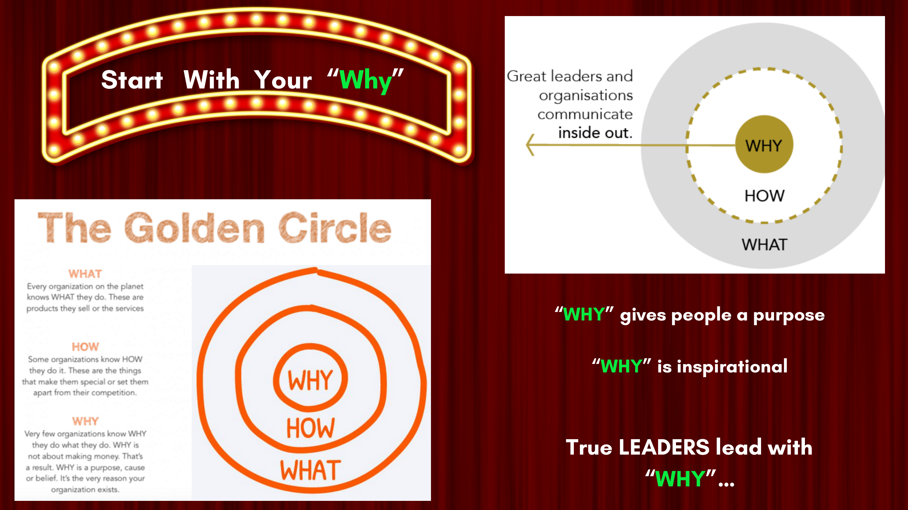
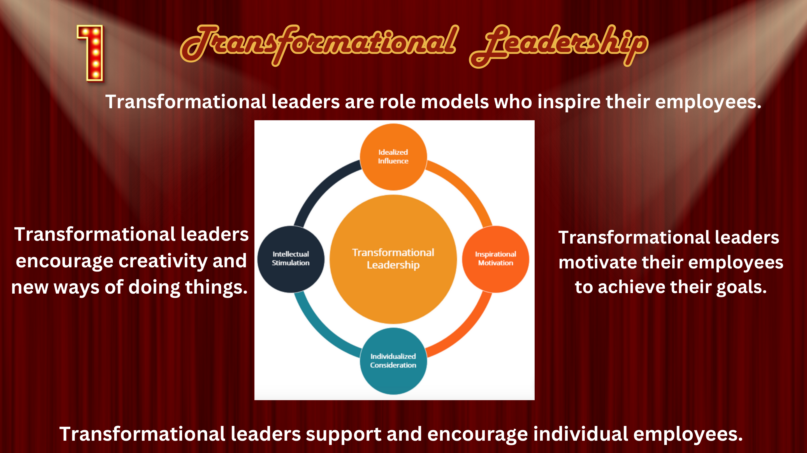
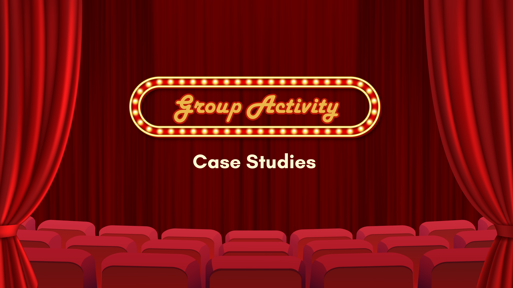

Workshop 1, November 18, 2025
Leadership &
Communication Skills
My first workshop ever, designed from scratch. Introduced different leadership styles through real world case studies, group discussions, and interactive activities to build communication skills.




Actual slides from Workshop 1